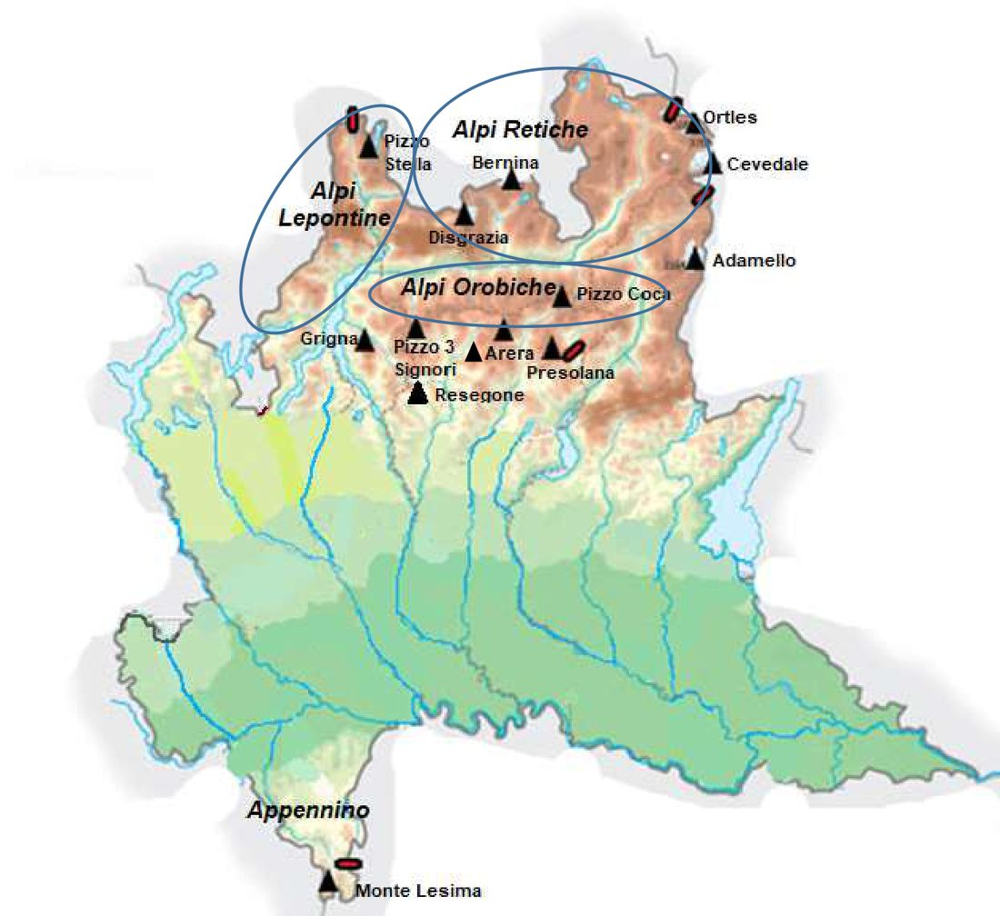
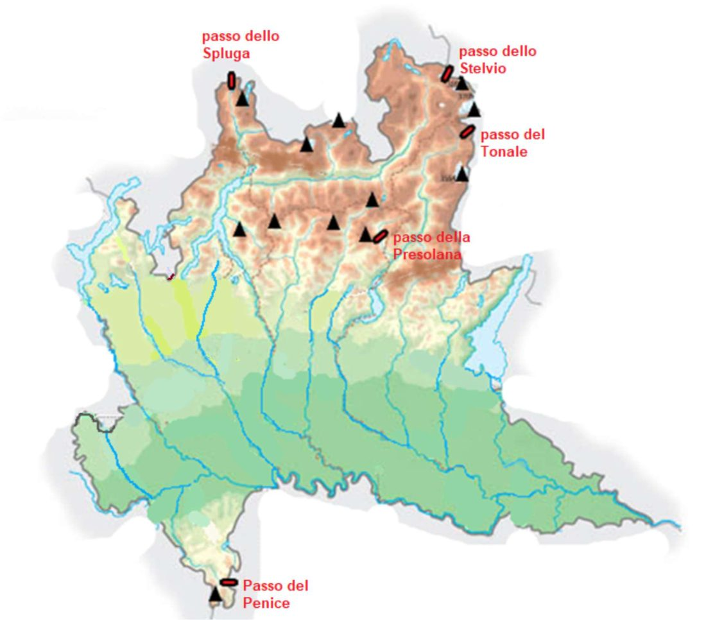
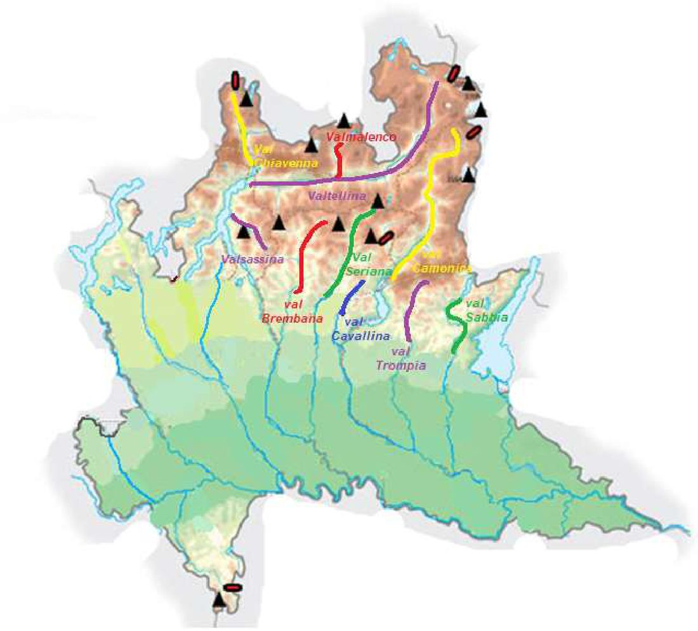
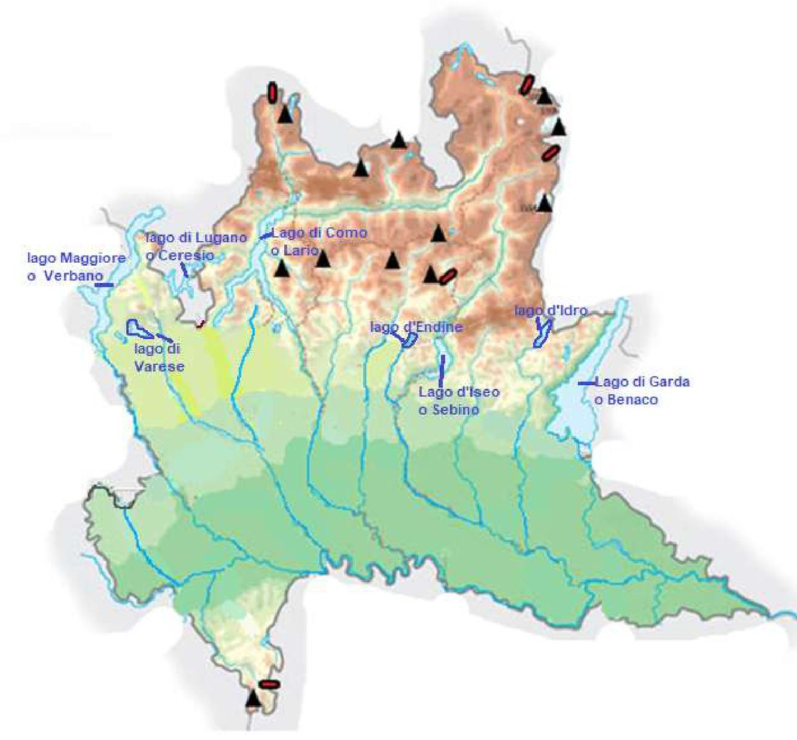
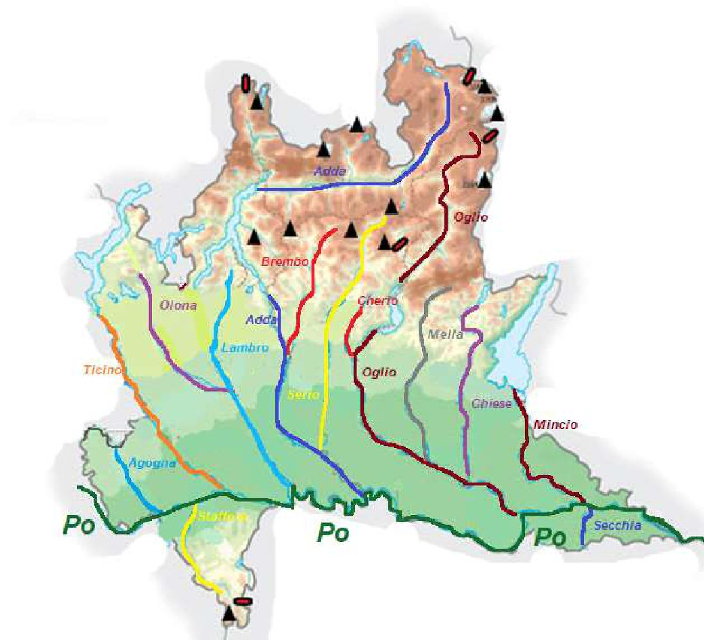
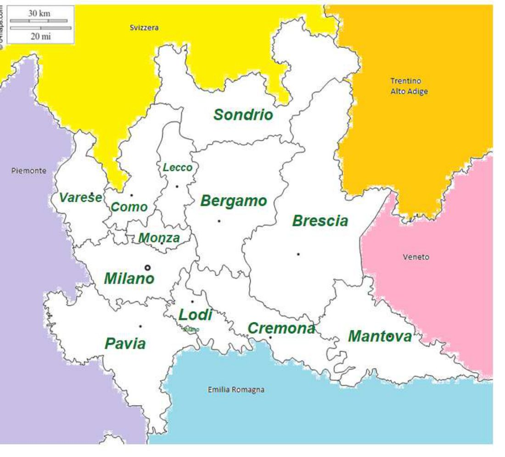
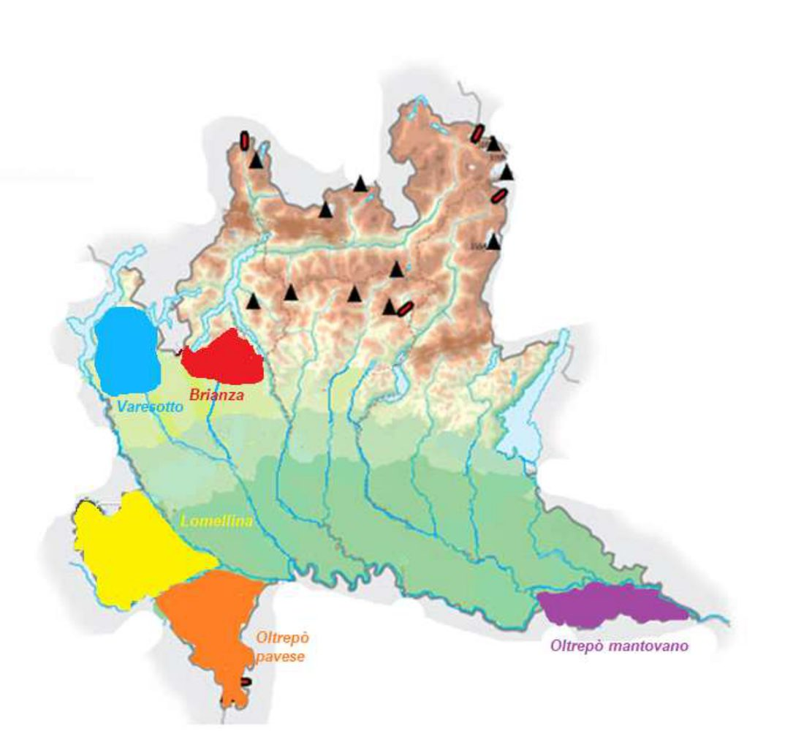
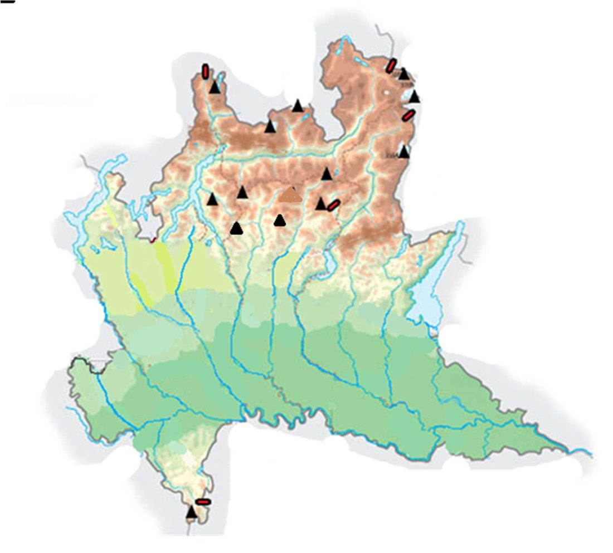
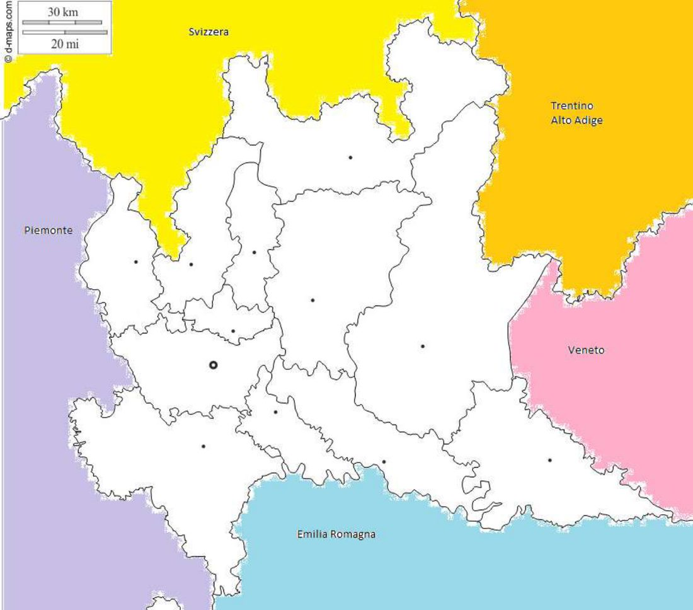
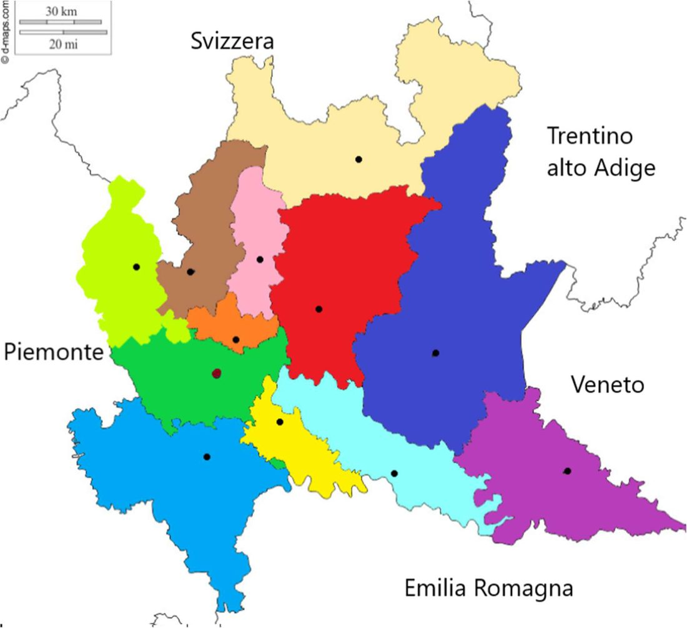

Monti, passi, valli, laghi, fiumi, province e subregioni: dove sono
📌 Come si usa: qui non c'è niente da imparare a memoria in fila. Guarda la carta, premi 🔊 Ascolta e cerca i nomi con il dito. In fondo ci sono le carte mute della prof per provare da sola.
La prof ha fatto un elenco di nomi da saper trovare sulla carta della Lombardia.
| Carta fisica | Quanti |
|---|---|
| ⛰️ Rilievi e monti | 17 |
| 🌊 Fiumi | 15 |
| 🏞️ Laghi (contando anche i secondi nomi) | 13 |
| 🏔️ Valli | 10 |
| 🚶 Passi | 5 |
| 🌾 Pianure | 1 |
| Totale | 61 |
Poi la carta politica: 12 province e 5 subregioni.

Le Alpi lombarde sono divise in tre gruppi:
Più in basso, verso la pianura, ci sono altre montagne: la Grigna e il Resegone (vicino a Lecco), il Pizzo dei Tre Signori, il Pizzo Arera e il Pizzo della Presolana.
Giù in fondo, a sud, c'è un pezzetto di Appennino con il Monte Lesima.

| Passo | Dove |
|---|---|
| Spluga | in alto a sinistra, verso la Svizzera |
| Stelvio | in alto a destra, all'angolo nord-est |
| Tonale | a destra, sul confine est |
| Presolana | nel mezzo, vicino al Pizzo della Presolana |
| Penice | in basso, nell'Appennino |

La valle più lunga è la Valtellina: va da sinistra a destra, in alto. Da lei salgono la Val Chiavenna (verso lo Spluga) e la Valmalenco.
Le altre scendono verso la pianura. Molte hanno il nome del loro fiume:
| Valle | Fiume |
|---|---|
| Valtellina | Adda |
| Val Brembana | Brembo |
| Val Seriana | Serio |
| Val Camonica | Oglio |
| Val Trompia | Mella |
| Val Sabbia | Chiese |
Poi ci sono la Valsassina (vicino a Lecco) e la Val Cavallina (vicino al lago d'Endine).

Da sinistra a destra:
| Lago | Secondo nome |
|---|---|
| Maggiore | Verbano |
| di Varese | — |
| di Lugano | Ceresio |
| di Como | Lario |
| d'Endine | — |
| d'Iseo | Sebino |
| d'Idro | — |
| di Garda | Benaco |

Il Po scorre in basso, da sinistra a destra, e fa da confine. Quasi tutti gli altri fiumi scendono dalle montagne e finiscono nel Po.
Da sinistra a destra: Agogna, Ticino, Olona, Lambro, Adda, Oglio, Mincio.
Alcuni fiumi più piccoli si gettano in quelli grandi:
Sotto il Po ci sono due fiumi piccoli: lo Staffora (sotto Pavia) e il Secchia (sotto Mantova).
C'è una sola pianura: la Pianura Padana. È tutta la parte verde della carta, nel mezzo e in basso, attraversata dal Po.

Leggile a righe, dall'alto in basso:

| Subregione | Dove |
|---|---|
| Varesotto 🔵 | in alto a sinistra, intorno a Varese |
| Brianza 🔴 | sopra Milano, verso Monza e Lecco |
| Lomellina 🟡 | in basso a sinistra, sopra il Po (Pavia) |
| Oltrepò pavese 🟠 | sotto il Po, la "punta" di Pavia |
| Oltrepò mantovano 🟣 | sotto il Po, in basso a destra (Mantova) |
Queste sono le carte senza nomi della prof. Mettile vicino e prova a dire a voce i nomi, uno alla volta. Se non ti viene, torna alla carta sopra e guarda: va benissimo.



1. Quali sono i tre gruppi delle Alpi lombarde?
2. In quale fiume si getta il Brembo?
3. Qual è il secondo nome del lago di Garda?
4. Dov'è il Passo del Penice?
5. Che cosa vuol dire Oltrepò?